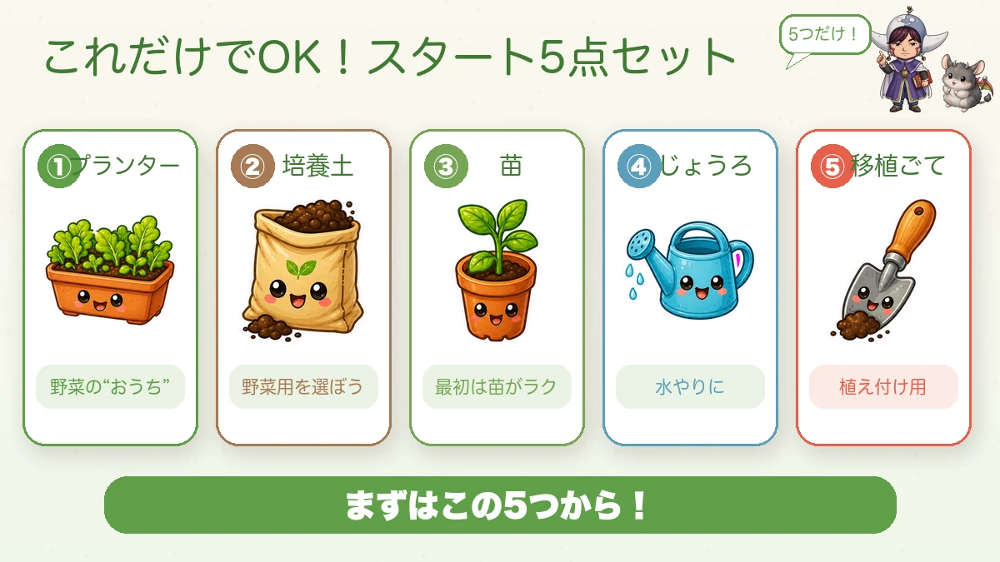
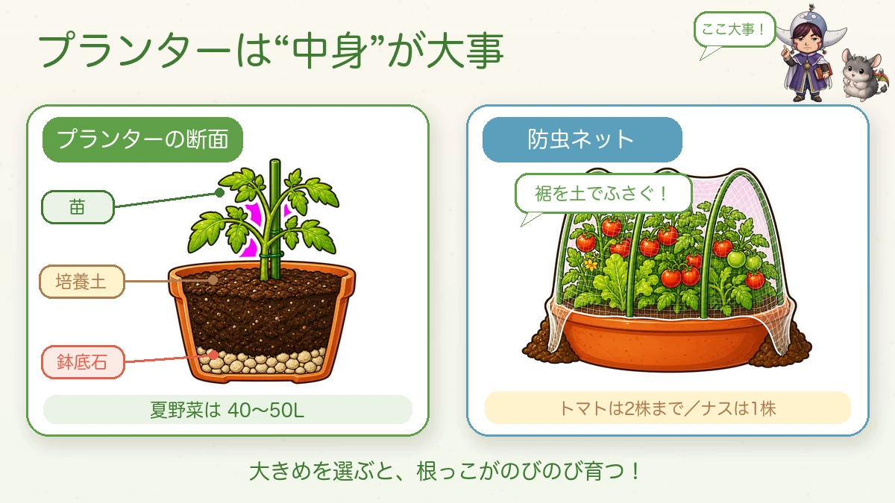

Five things and you can start 🪴 What to buy first, and what to leave

🪴 "Do I really need all that equipment?"
🪴 "It looks like it'll be expensive."
🪴 "I genuinely don't know what to buy."
Hello, I'm Eiko. Eight years of growing vegetables organically and without pesticides, and a teaching licence in science.
Good news: what you need at the start is very little, and most of it can come from a pound shop.
The five things

What this diagram says （図解の文字）
- This is all you need — the starting five
- ① Container — "the vegetable's house"
- ② Potting compost — "pick one labelled for vegetables"
- ③ A plant — "a transplant is easier at first"
- ④ Watering can
- ⑤ Trowel — "for planting"
① A container
The star of the show if you're growing on a balcony. One rule: get the biggest you reasonably can. Vegetables put out a great deal of root where you can't see it, and a small container cramps them, so growth and cropping both suffer. For summer crops like tomatoes and aubergines, aim for 40–50 litres (10–13 US gal).
② Potting compost
Buy one labelled for vegetables and you're fine — drainage, water-holding and air are already balanced for you.
It usually contains fertiliser too, so you don't add any at the start. Beginners add fertiliser meaning well; it's a trap worth knowing about.
③ A plant
Far easier than seed to begin with. Choose one with firm leaves that doesn't wobble in its pot.
④ A watering can
Self-explanatory. One with a removable rose is handy, because you can then use it for sowing as well.
⑤ A trowel
For planting. A cheap one is genuinely fine — mine is.
That's it. Fewer than you expected, probably.
Growing without sprays? Add insect netting

What this diagram says （図解の文字）
- What's inside the container is what matters — a cutaway
- plant ／ potting compost ／ drainage stones
- "Summer crops: 40–50 L"
- Insect netting — "seal the hem with soil!"
- "Tomatoes: two plants maximum. Aubergine: one"
- "Choose a big one and the roots can spread"
This is the one thing I won't leave out. Once pests arrive it's usually too late, so keeping them out physically from the start is both the easiest and the most reliable approach.
- Insect netting (about 180 cm / 6 ft wide)
- Canes or flexible hoops
- Clips to hold it — plastic ones don't rust
Seal the hem properly with soil. Insects slip through the smallest gap, so take care over that one part.
Useful, but they can wait
- Harvesting snips — a cheap pair takes very little hand strength
- Drainage stones — improve drainage in the bottom of a container (unnecessary in a slotted one)
- A draw hoe — for open ground. One tool for weeding, levelling and making beds
- Gloves — for days you'd rather not get muddy
A short word about soil and fertiliser
Bought compost contains fertiliser, but as the plant grows you'll need to feed it. One point of science:
Compost (manure and the like) improves the soil — it makes it crumbly.
Fertiliser (poultry manure, rapeseed meal) is food for the plant.
And organic fertiliser has a quirk that synthetic fertiliser doesn't: it does nothing until soil microbes have broken it down. It's an ingredient before prep, not a finished dish. So:
- Don't put a lot in at once — you get over-strong effects and an unbalanced soil
- Don't add it just before planting. Leave it two to three weeks, or the roots suffer
- Don't just scatter it on the surface. Mix it in
Keeping to those three alone removes a lot of failures.
Cheap shops will cover most of it
Honestly: you don't need expensive tools at the start.
From a pound shop or equivalent: trowel, watering can, canes, clips, a small container, a small piece of insect netting, seed.
Three cautions with very cheap seed: check the sowing season on the packet, the variety is often unnamed, and the quantity isn't given as a seed count. For a beginner or for containers it's perfectly adequate — sturdy, easy leafy crops are a good place to start.
The one rule against overbuying: while you don't yet know whether you'll keep it up, buy the minimum. Once you find you're enjoying it, add better tools. Mine were all cheap at first.
To sum up
- ✅ The five: container, potting compost, plant, watering can, trowel
- ✅ Growing without sprays: add insect netting — and seal the hem with soil
- ✅ Buy the biggest container you can. Summer crops want 40–50 L
- ✅ Bought compost already has fertiliser in it. Don't add more at the start
- ✅ Compost improves soil; fertiliser feeds plants. Different things
- ✅ Cheap tools are fine. Buy the minimum and upgrade once it sticks
With the kit sorted, the preparation is half done. The rest is planting 🌱
Thank you for reading!